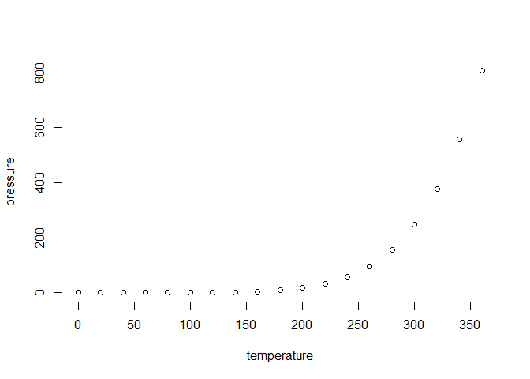
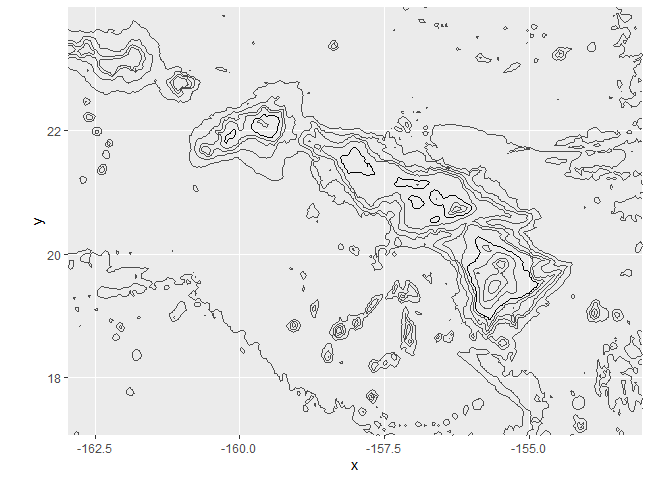

R Markdown
This is an R Markdown document. Markdown is a simple formatting syntax for authoring HTML, PDF, and MS Word documents. For more details on using R Markdown see http://rmarkdown.rstudio.com.
When you click the Knit button a document will be generated that includes both content as well as the output of any embedded R code chunks within the document. You can embed an R code chunk like this:
1 | summary(cars) |
## speed dist
## Min. : 4.0 Min. : 2.00
## 1st Qu.:12.0 1st Qu.: 26.00
## Median :15.0 Median : 36.00
## Mean :15.4 Mean : 42.98
## 3rd Qu.:19.0 3rd Qu.: 56.00
## Max. :25.0 Max. :120.00
Including Plots
You can also embed plots, for example:

Note that the echo = FALSE parameter was added to the code chunk to prevent printing of the R code that generated the plot.
Insert Code Chunk
Short cut: Ctrl + Alt + I include = FALSE:doesn’t show code and result, but result can still be used in other code chunk echo = FALSE:doesn’t show code but still show result. Useful in showing figures message = FALSE:doesn’t show messages from the code warning = FALSE:doesn’t show warnings from the code fig.cap = "...":adds a caption to graphical results
Parameters
Have to declare parameters in the YAML header by using params. In this example, the file creats the parameter data and assigns it the default "hawaii"
Using parameter in code

Setting parameters value Add a params argument to render when running in the Console